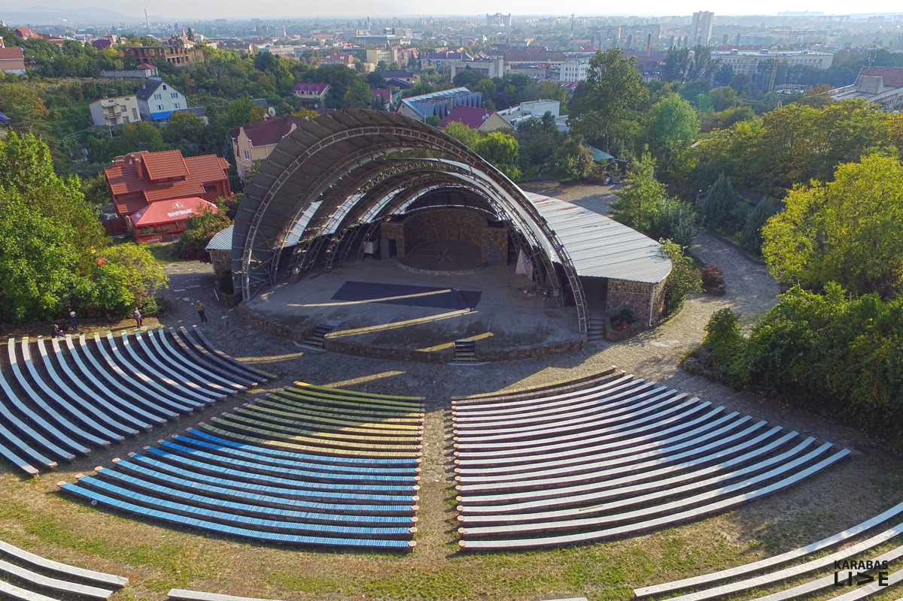

Концерт Монатіка в Ужгороді

Наше лето не кончается. Мы закрываем сезон, но официально продлеваем лето. Яркое, жаркое, феерическое! Лето-витамин, лето-динамит, лето-на-танцы MONATIK-манит.
>Давай! Vamos! Зажигать, а не прожигать будем! Вместе с самым танцевальным артистом планеты устроим себе лето в самом разгаре осени в самой танцевальной точке столицы – Cuba Camp. C неба погоды не ждать, брать что можно взять. Пока драгоценное время есть, здесь. Именно в этом месте будем вместе все. Давай, жизнь одна дана!
MONATIK является самым титулованным артистом страны на престижных наградах в сфере культуры. Его песни покоряют главные хит-парады и становятся лидерами загрузок. Клипы набирают миллионы просмотров в сети. Творчество, искренность и самобытность мультиартиста достойно отмечены не только публикой, а также MONATIK удостоен звания - Заслуженный артист Украины. Нет ничего лучше чем почувствовать и словить ритм от любимых хитов вживую!Місце проведення - "Амфітеатр"
Історія: одна з найдавніших локацій Ужгорода приваблює відкритою сценою зі своєрадним арочним дахом. Крім зовнішнього майданчика є і внутрішні приміщення, де організовують концерти представники альтернативної музики. Асортимент: тут часто проводять міські фестивалі – «ПораБуло фест», «Fire Life». На цій сцені виступали Джамала, Dzidzio, Loboda та інші українські поп-артисти.
Атмосфера: просто і без претензії, але в цьому і шарм справжності цього місця. Локація знаходиться не в центрі міста, що додає особливості проведення заходів тут – вони завжди запам’ятовуються. Дерев’яні довгі лавиці, дерева по боках, кам’яний фасад будівлі, дешевий ресторанчик всередині, природа навколо.
Your add
Your add